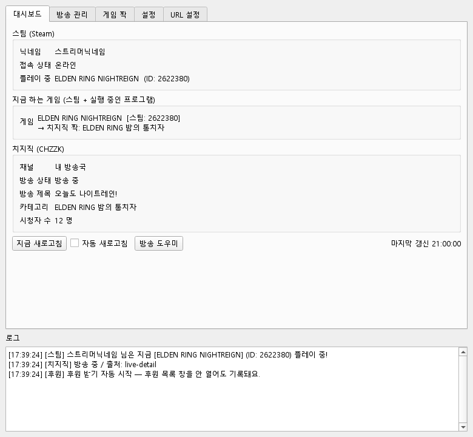
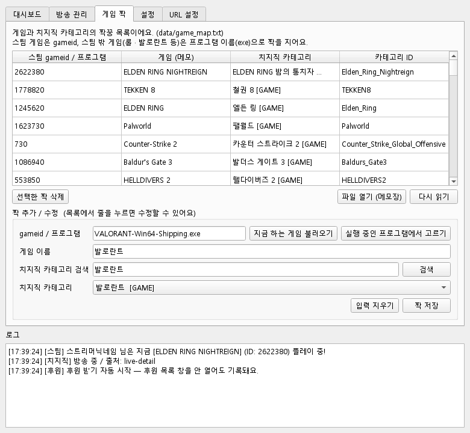
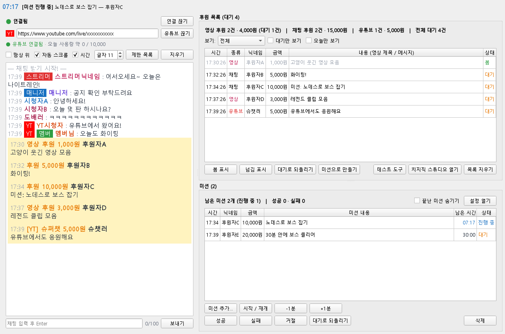

스팀 · 치지직 연동 방송 도우미 — 카테고리 자동 변경 · 실시간 채팅 · 후원 / 미션 관리
설치하기
설정 넣기
게임 ↔ 카테고리 자동 연동
방송 도우미 (한 화면)
유튜브 채팅 같이 보기
후원 목록
미션 & 타이머
시청자 관리
테스트 도구 & 문제 해결
알아두면 좋은 점
1. 설치하기
파이썬을 몰라도 됩니다. run.bat 하나가 필요한 것을 알아서 설치합니다.
준비물: Windows 10 / 11 컴퓨터와 인터넷(처음 설치할 때만). 파이썬은 없어도 됩니다 — 없으면 Python 3.12 를 자동으로 설치합니다. (관리자 권한 필요 없음)
설치 순서
받은 chzzkControl 폴더(압축 파일이면 압축을 푼 폴더)를 원하는 곳에 둡니다. 예: D:\chzzkControl
폴더 안의 run.bat 을 더블클릭합니다.
검은 창이 뜨고 아래 순서로 설치가 진행됩니다. 처음 한 번은 몇 분 걸립니다.
Setup complete 가 나오면 잠시 뒤 프로그램 창이 열립니다. → 2. 설정 넣기 로 넘어가세요.
다음부터는 run.bat 더블클릭만 하면 바로 열립니다. (설치만 다시 하려면 install.bat)
[1/4] Looking for Python... ← 파이썬 찾기
[2/4] Installing Python 3.12.10 ... ← 없을 때만 자동 설치
[3/4] Preparing virtual environment (.venv)... ← .venv 폴더 만들기
[4/4] Installing libraries... ← 라이브러리 설치
Setup complete. Now run run.bat
권한을 나중에 추가했다면? 프로그램에서 [로그아웃] → [치지직 로그인] 을 다시 해야 새 권한이 적용됩니다. 브라우저 동의 화면에 새 권한이 보이는지 확인하세요.
스팀 준비: 스팀 → 프로필 편집 → 개인 정보 설정에서 내 프로필, 게임 세부 정보를 공개로 해야 지금 하는 게임이 보입니다.
3. 게임 ↔ 카테고리 자동 연동
게임을 켜면 치지직 방송 카테고리를 알아서 바꿔줘요. 스팀과 치지직은 같은 게임도 이름이 달라서
(예: 스팀 ELDEN RING NIGHTREIGN = 치지직 ELDEN RING 밤의 통치자) 게임마다 짝을 지어 기억해요.
켜는 법
[방송 관리] → ② 카테고리 → '게임이 바뀌면 자동으로 맞추기' 체크
[대시보드] → '자동 새로고침' 체크 (30초마다 지금 하는 게임을 확인)
주의: 자동 맞추기가 켜져 있으면 프로그램을 켜자마자 카테고리가 바뀔 수 있어요. 켜 둔 게임과 다른 방송을 할 때는 꺼 두세요.

[대시보드] — '지금 하는 게임' 칸에 감지된 게임과 치지직 짝이 보여요
게임을 알아보는 방법 NEW
방법
설명
스팀
스팀에서 '플레이 중' 인 게임. 게임 PC 와 방송 PC 가 달라도 돼요. (스팀 서버에 물어봐요)
실행 중인 프로그램
스팀 밖 게임(롤 · 발로란트 · 메이플 · 로아 · 오버워치 · 디아블로 4 등)은 내 PC 에서 실행 중인 프로그램(exe)으로 알아봐요.
게임 설치 폴더NEW
목록에 없는 게임도 알아봐요. 에픽 · 넥슨 · 엑스박스 · 라이엇 · GOG 등 게임 설치 폴더에서 실행된 프로그램을 게임으로 보고, 창 제목으로 카테고리를 자동 검색해요. (런처 · 업데이트 · 안티치트는 제외, ② 카테고리의 '목록에 없는 게임도 알아보기' 로 끄고 켜기)
게임 아닌 프로그램은 무시
Wallpaper Engine · OBS Studio · Crosshair X · Bongo Cat 은 스팀에 '플레이 중' 으로 떠도 카테고리를 안 바꿔요.
짝이 없는 게임은? → 자동으로 찾아요 NEW
스팀 상점의 한국어 이름으로 검색 (예: TEKKEN 8 → 철권 8)
내장 한국어 이름 목록(약 115개)으로 검색 (예: Counter-Strike 2 → 카운터 스트라이크 2)
이름이 똑같은 카테고리가 있으면 → 짝으로 저장하고 바로 적용 (다음부터는 검색 없이 바로)
못 찾으면 → '종합 게임' 으로 (짝으로 저장하지는 않아요. ② 카테고리의 체크박스로 끄고 켜기)
짝 목록에는 스팀 동시접속자 상위 100개 중 89개(게임 아닌 4개 · 치지직에 없는 7개 빼고 전부)와 스팀 밖 인기 게임이 미리 들어 있어요. (총 105개)
짝을 직접 만들거나 고치기
[방송 관리] → [지금 게임으로 맞추기]: 자동으로 못 찾으면 후보 + '종합 게임' 이 목록에 나와요 → 골라서 [카테고리 적용] → 짝 자동 저장
[게임 짝] 탭: [지금 하는 게임 불러오기] 또는 [실행 중인 프로그램에서 고르기] → 카테고리 검색 → [짝 저장]. 줄을 누르면 수정, [선택한 짝 삭제] 로 삭제

[게임 짝] — 스팀 gameid 또는 프로그램 이름(exe)으로 짝을 지어요
4. 방송 도우미 (채팅 + 후원 + 미션 한 화면) NEW
[대시보드] → [방송 도우미] 를 누르면 방송 중에 필요한 것이 한 화면에 나와요.

방송 도우미 — 왼쪽 채팅, 오른쪽 위 후원 목록, 오른쪽 아래 미션
왼쪽 실시간 채팅: 스트리머 / 매니저 딱지, 닉네임별 색, 후원은 노란 줄. 아래 칸에 쓰고 Enter → 채팅 보내기 (100자)
항상 위: 창 전체가 게임 위에 떠 있어요. 자동 스크롤 · 시간 · 글자 크기 · 지우기
연결 상태와 [연결 / 연결 끊기] 는 채팅 위쪽에. 인터넷이 끊기면 3초 → 6초 → … 최대 60초 간격으로 자동 재연결
경계선(가운데 세로 · 오른쪽 가로)을 끌어서 크기 조절. 대시보드 버튼에 '방송 도우미 (대기 3 · 미션 2)' 처럼 숫자가 보여요.
후원 받기 자동 시작: 프로그램을 켜고 로그인돼 있으면 방송 도우미를 안 열어도 후원 · 미션이 기록돼요.
끄려면 [방송 관리] → ③ 채팅 → '프로그램을 켜면 후원 받기 자동 시작' 체크 해제.
5. 유튜브 채팅 같이 보기 NEW
치지직 + 유튜브 동시 송출할 때, 방송 도우미 채팅창에 유튜브 채팅도 [YT] 로 섞어서 보여줘요.
유튜브 공식 Data API 를 써서 안정적이에요. (구글 계정 로그인 연동은 필요 없고, API 키만 있으면 돼요)
API 및 서비스 → 사용자 인증 정보 → 사용자 인증 정보 만들기 → API 키 → 만들어진 키 복사
(권장) 그 키의 API 제한사항 에서 YouTube Data API v3 만 허용
프로그램 [설정] → 유튜브 → API 키 에 붙여넣고 [저장]
쓰는 법
방송 도우미 채팅창 위의 [YT] 칸에 유튜브 방송 주소(예: https://www.youtube.com/live/xxxxxxxxxxx)를 넣고 [유튜브 연결]
슈퍼챗은 노란 줄로 보이고 후원 목록('유튜브') 에 들어가요. "미션" 으로 시작하면 미션으로도 등록돼요.
마지막에 넣은 주소는 기억해 둬요. 방송 도우미 창을 닫으면 유튜브 연결도 끊겨요. (사용량 아끼기)
@채널이름 만 넣어도 지금 방송 중인 영상을 찾지만, 사용량이 100점 들어서 방송 주소를 추천해요. 유튜브로 채팅 보내기는 안 돼요.
하루 사용량: 구글 프로젝트마다 하루 10,000점, 채팅을 한 번 가져올 때 5점. 한국 시간 오후 4~5시쯤 다시 채워져요.
[설정] → 채팅 가져오는 간격(기본 8초 ≈ 하루 약 4시간)으로 조절하고, 채팅창의 유튜브 줄에서 오늘 사용량을 확인하세요.
방송이 더 길면 Google Cloud 에서 할당량 증가 신청(무료)을 할 수 있어요.
6. 후원 목록 NEW
영상 · 채팅 후원을 표로 모아 보고, 한 줄씩 대기 / 봄 / 넘김 을 표시해서 대기열처럼 관리해요.
기능
설명
봄 표시 / 넘김 표시 / 대기로 되돌리기
여러 줄을 골라 한 번에. 더블클릭 = 대기 ↔ 봄. 끝난 줄은 흐리게
보기
전체 / 영상 후원만 / 미션 후원만 / 채팅 후원만, 대기만 보기, 오늘만 보기
합계
영상 · 채팅(· 미션) 건수와 금액, 대기 건수
미션으로 만들기
고른 후원을 미션으로 등록 (7장)
치지직 스튜디오 열기
영상 재생 · 건너뛰기는 스튜디오에서 (치지직 API 에 제어 기능이 없어요)
저장
data/donations.json 에 저장 → 껐다 켜도 목록과 봄 / 넘김이 남아요. 예전 후원은 날짜도 표시 (최근 3000건)
후원이 안 들어오면
창 위에 아래 같은 빨간 경고가 뜨면 개발자 센터에 '후원 조회' 권한이 없는 거예요. → 권한 체크 → 로그아웃 → 다시 로그인.
치지직 공식 API 는 영상 후원의 제목만 알려줘요. (영상 주소 · 재생 제어 없음) 또 지난 후원 내역을 주지 않아서, 프로그램이 꺼져 있던 동안의 후원은 가져올 수 없어요.
7. 미션 & 타이머 NEW
치지직 API 는 '미션 후원' 을 따로 알려주지 않아서, 들어오는 후원에서 미션을 골라내요.
미션이 등록되는 방법
자동: 후원 메시지가 "미션" 으로 시작하면 → 예) 미션: 노데스로 보스 잡기, [미션] 30분 안에 클리어
직접: 후원 목록에서 [미션으로 만들기], 또는 미션 칸의 [미션 추가...]
타이머
미션을 고르고 [시작 / 재개] → 제한 시간이 줄어들어요. [일시정지], [-1분] [+1분], 더블클릭 = 시작 ↔ 일시정지
시간이 끝나면 '시간 초과' + 소리 → [성공] [실패] [거절] 로 마무리. 시간 초과된 미션에 +1분을 누르면 다시 진행
방송 도우미 맨 위에 진행 중인 미션 타이머가 항상 보여요. 미션은 data/missions.json 에 저장 (진행 중이던 타이머도 이어져요)
설정 ([설정 열기])
기본 제한 시간 · 시간 끝나면 소리 · 시작 / 결과를 채팅으로 알리기 · 자동 등록 단어(기본 "미션") · OBS 타이머 파일
방송 화면에 타이머 띄우기 (OBS)
미션 설정의 'OBS 용 타이머 파일 쓰기' 체크 → [경로 복사]
OBS → 소스 [+] → 텍스트 (GDI+) → '파일에서 읽기' 체크 → 복사한 경로(data\mission_timer.txt) 선택
미션을 시작하면 방송 화면에 [미션] 노데스로 보스 잡기 - 후원자C 07:17 이 1초마다 바뀌어요.
8. 시청자 관리 NEW
닉네임 메뉴
채팅에서 닉네임을 누르거나 채팅 줄을 우클릭하면 메뉴가 떠요.
메뉴
하는 일
임시 제한
잠깐 채팅 금지. 시간은 치지직이 정해요 (처음 30초, 또 하면 60초 …)
임시 제한 풀기
바로 해제
이 메시지 가리기
그 채팅 한 줄을 가려요
활동 제한 (풀 때까지)
한 번 더 물어보고 제한
닉네임 복사
클립보드로 복사
채팅 위쪽 [제한 목록]: 활동 제한한 시청자를 보고, 골라서 풀어줘요. (임시 제한은 금방 풀려서 목록에 안 나와요)
스트리머 본인 채팅에는 제한 메뉴가 안 나와요. 결과는 채팅에 — 도배러 님을 임시 제한했어요 — 처럼 표시돼요.
필요한 권한: 활동제한 쓰기 / 조회, 가리기는 채팅 메시지 쓰기. 권한이 없으면 해결 방법이 채팅에 안내돼요.
9. 테스트 도구 & 문제 해결 NEW
후원 목록 → [테스트 도구]
① 가짜 후원 · 채팅: 영상 / 채팅 / 미션 후원, 채팅 한 줄을 내 프로그램 안에서만 보내 봐요. '(테스트)' 로 표시되고 저장 안 돼요.
② 실패 상황 흉내: 후원 권한 없음 · 연결 끊김 → 다시 연결 · 연결 오류 · 로그인 풀림. [원래 상태로] 로 되돌려요.
③ 실제 연결 점검: 치지직에 진짜로 접속해서 로그인 → 접속 주소 → 채팅 받기 → 후원 받기 를 [성공] / [실패] 로 보여줘요.
후원이 안 들어오면 이것부터 눌러 보세요.
이럴 땐
보이는 것
해결
오류: 치지직 로그인이 필요해요
[방송 관리] 탭에서 [치지직 로그인]
오류 + 403 (채팅 메시지 조회 권한)
개발자 센터에서 '채팅 메시지 조회' 체크 → 로그아웃 → 다시 로그인
빨간 경고: 후원 알림을 받을 수 없어요
'후원 조회' 권한 체크 → 로그아웃 → 다시 로그인 (테스트 도구 ③ 으로 확인)
다시 연결 대기
인터넷이 잠깐 끊긴 것. 자동으로 다시 연결돼요 (인터넷이 끊겨도 로그인은 안 풀려요)
카테고리가 '종합 게임' 으로 바뀜
치지직에서 그 게임 카테고리를 못 찾은 것. [지금 게임으로 맞추기] 로 직접 고르거나 [게임 짝] 탭에서 짝 만들기
게임을 안 알아봄
스팀 프로필 · 게임 세부 정보 공개 확인. 스팀 밖 게임은 [게임 짝] → [실행 중인 프로그램에서 고르기]
10. 알아두면 좋은 점
치지직 공식 API 로 안 되는 것
안 되는 것
대신
영상 후원 재생 · 건너뛰기 · 광고 넘기기
치지직 스튜디오에서 직접. (유튜브 프리미엄 계정으로 OBS 브라우저에 로그인하면 광고가 안 나올 수 있어요)
영상 후원의 영상 주소
제목만 와요
미션 후원 따로 받기
후원 메시지가 "미션" 으로 시작하면 자동 등록 (7장)
지난 후원 내역 가져오기
프로그램이 받은 후원만 저장돼요 → '후원 받기 자동 시작' 을 켜 두세요
임시 제한 시간 정하기
치지직이 정해요 (30초 → 60초 …)
저장되는 파일 (data 폴더)
파일
내용
init.json
설정 · 키 · 토큰 — 절대 공유하지 마세요 (깃허브에도 안 올라가요)
game_map.txt
게임 ↔ 카테고리 짝 목록 (메모장으로 고쳐도 돼요)
donations.json · missions.json
받은 후원 · 미션 기록
mission_timer.txt
OBS 용 미션 타이머 글자
그 밖에
방송 상태는 치지직 웹사이트가 쓰는 비공식 주소로 먼저 확인하고, 안 되면 공식 라이브 목록에서 찾아요. 비공식 주소는 예고 없이 바뀔 수 있어요.
방송 설정 변경은 '기본 방송 설정' 을 바꾸는 것이라, 방송 중이면 현재 방송에도 바로 반영돼요.
스팀 API 는 하루 호출 횟수 제한이 있어서 자동 새로고침은 10초 이상(기본 30초)을 권장해요.
치지직은 한 사람당 실시간 채팅 연결을 3개까지만 허용해요. 프로그램은 연결 하나를 채팅 · 후원 · 미션이 나눠 써요.
터미널로도 쓸 수 있어요: run.bat status, run.bat sync-game, run.bat chat "안녕하세요" … (명령 목록은 README.md)